V1 — בדיקה חזותית מול שלושת הרפרנסים
מצב בתאריך 24/10/2026: השער החזותי העצמאי עבר אחרי התיקונים. קבלת V1 הכוללת והעדפה אנושית עדיין פתוחות.
אדם אישר את הכיוון המתוקן ואת המשך המימוש. חסימת הצילום נפתרה בהיקף הבדיקה הנוכחי. הבדיקה בשיחה הראשית החליפה את בקשת QA הביניים מאדם, לפי הוראתו להמשיך עד סוף העבודה האפשרית. כעת ממשיכים לקבלה הטכנית, ללא טענה שהעדפה אנושית או קבלה כוללת כבר הוכחו.
הדרישות נמצאות בתוך בדיקת הגרפיקה ובתוך עמידה ברמת המתחרים. מפת הרפרנסים מקשרת למקורות ולתאריכי האיסוף. נפתחו שוב תמונות gameplay משלושת המחקרים:
- Escape Tsunami — משטחי בסיס וחפץ נישא.
- Steal a Brainrot — חפץ נישא ובסיסים מזוהים.
- Survive LAVA — צורת חפצים, צבעים ותוויות ערך.
תיקוני ההמשך ובדיקה עצמאית — 24/10/2026
לפי הוראת אדם להמשיך עד השלמת הבדיקות בלי בקשת QA ממנו, נבדקו הפערים בשיחה הראשית. המטען הוגדל וסודר בשתי עמודות. בדיקה שכשלה קודם נדרשת לרוחב נראה של המשפחות, להפרדה בין החפצים ולגובה קומפקטי גם עם חמישה מכלים. כל tests אלה עברו.
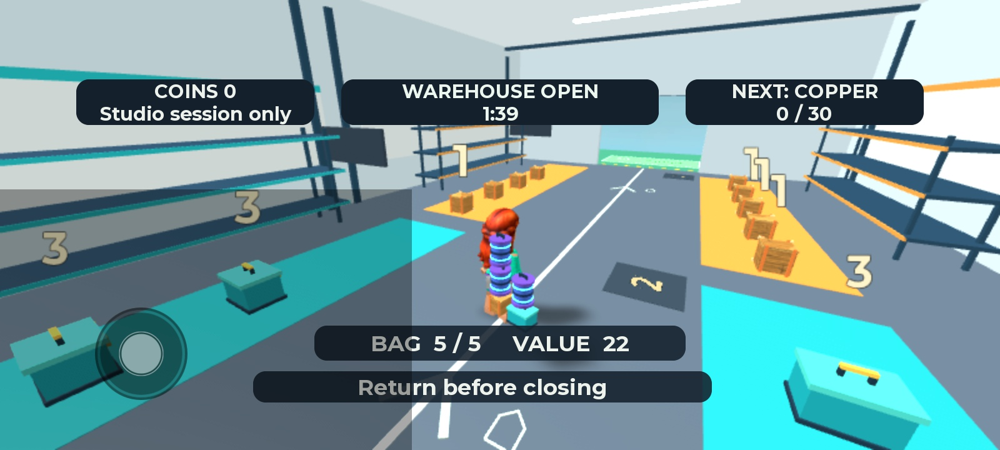
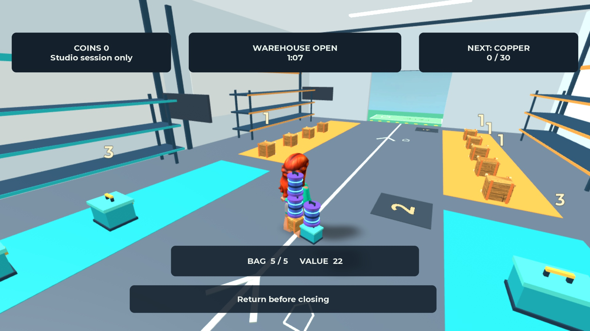
בדיקת touch ליד קיר חשפה דחיסת מצלמה ל־1.609 studs והסתרה בשיער. מצב Invisicam המובנה שומר כעת 14 studs בזווית שנבדקה. לוחות ומדפים משתתפים בהסתרה המקומית; גם אחרי שקיר נעשה שקוף הוא נשאר מוצק. נוסף נפח חסימה שקוף למדפים, מחוץ למעבר המרכזי ולנתיבי האיסוף. הדמות נעצרה מחוץ למדף; נקודת העמידה נשארה מתחת לגובה העמידה על המדף התחתון. בדיקת QA שהשתמשה בגובה קבוע 4 הייתה מחמירה מדי בזמן מגע; הבדיקה המתאימה נגזרת מגובה המדף והדמות בפועל. אין טענה שאין שום תנועה אנכית בזמן התנגשות.
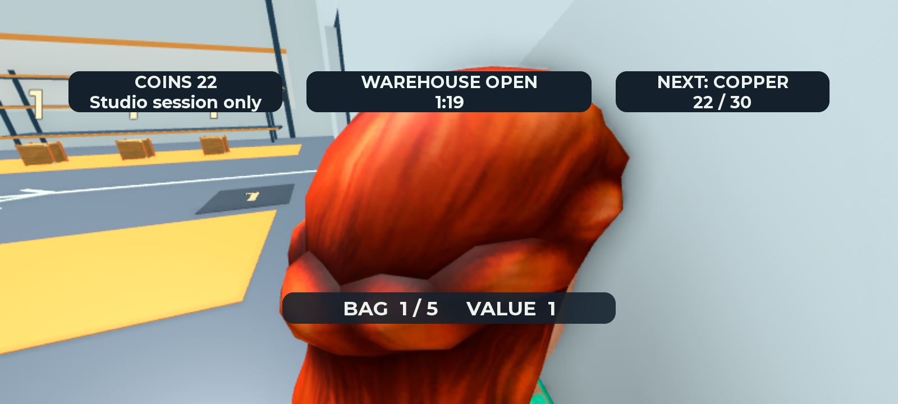
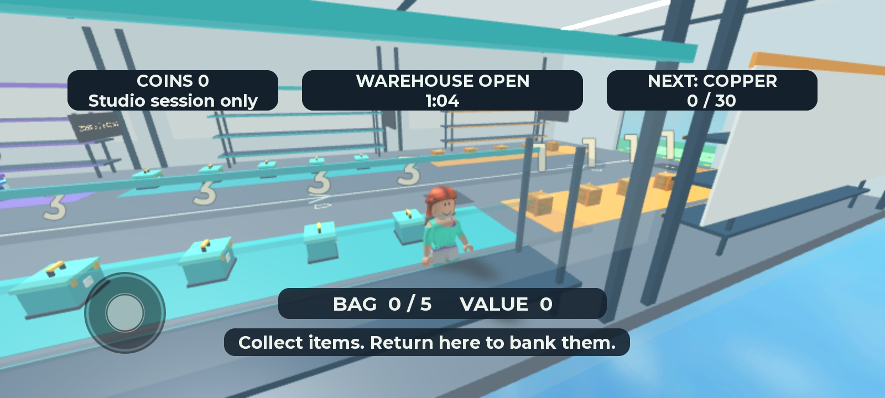
| תחום חזותי | תוצאה בבדיקה העצמאית והראיה |
|---|---|
| סגנון וסביבה | עבר בהיקף V1: שלוש משפחות מפורטות, שילוב צבעים וחומרים, מדפים וכניסה עקביים עם הסגנון התעשייתי שאושר. מבנה פשוט אינו מוכיח הצלחה מסחרית |
| מסלול ואזורים | עבר בצילומים: צבע יחד עם ספרה, חץ ויעד בסיס מובחן. המעבר המרכזי נשאר פנוי |
| חפצים ומטען | עבר בזוויות שנבדקו: הדגמים נראים, המטען המוגדל נבדל מהדמות והדרך נראית במחשב ובשני פרופילי נייד. אין טענה שכל זווית אפשרית נבדקה |
| UI ותוויות | עבר בארבעת הגדלים: גבולות השדות והיעדר חפיפה נמדדו, טקסטים גלויים עברו TextFits. הודעת הכישלון נמדדה כשהייתה גלויה |
| מצלמה | עבר בבדיקה הממוקדת: פתיחה למחסן, מטען מלא, גרירת touch וקיר. הקריסה לתוך הראש תוקנה ונצפתה מחדש |
| תאורה וצבע | עבר בצילומים: תאורה קבועה ובהירה, רקע רגוע יחסית, סימון אזורים וחפצים מנוגדים; ללא ערפל או הבהוב |
| תגובות חזותיות | עבר בהיקף שנצפה: איסוף מסתיר את החפץ, Banked +22 הופיע, זמן האזהרה מובחן, והודעת Cargo lost נראתה ונמדדה ללא חיתוך. קצב ותזמון תגובות נבדקו במהלך הריצה; תמונה לבדה אינה מוכיחה אותם |
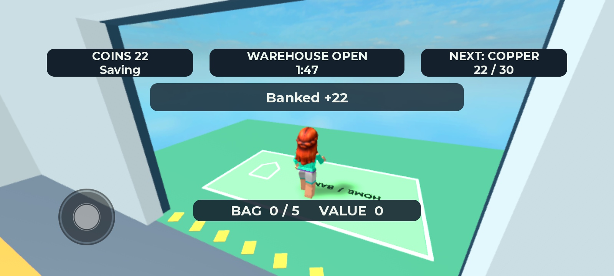
מסקנת הבודק: שער האיכות החזותית עובר בהיקף V1 ובסצנות שנבדקו, ולכן אפשר להמשיך לקבלה הטכנית. מול Escape Tsunami יש משטחים מובחנים ומטען בולט יותר; מול Steal a Brainrot יש יעד חזרה ניכר ומטען מזוהה; מול Survive LAVA יש הבדלי צורה, צבע וערך. דמויות המתחרים שונות מהחפצים התעשייתיים שאושרו אצלנו. אין דרישה להעתיק אותן, ואין הוכחה שהמשחק שלנו מושך יותר או ייבחר בסבירות גבוהה. אלה נשארים בתחום בדיקות ההעדפה האנושיות.
הערכת מוצר: קיימת סיבה לנסות את הלולאה הקצרה ואת הבחירה בין עוד חפץ לחזרה בטוחה. אין עדיין ראיות שמאפשרות להמליץ לבחור בנו על פני המתחרים. ראיות התיקונים והקלט מפרידות בין תוצאות הבדיקה לבין מגבלות touch, ביצועים, שמירה והעדפה.
צילומי ביניים — לפני תיקוני המטען והמצלמה
הצילומים הבאים הם מהמימוש החדש, באותו חלון Studio. הם מחליפים את חסימת הצילום שצוינה בעדכון הקודם. המקורות המקומיים של שלושת המתחרים נפתחו שוב לצד הצילומים החדשים. מקור כל רפרנס ותאריך האיסוף נשארים מתועדים במסמכי המחקר המקושרים כאן; אין טענה שהם מייצגים את הגרסה העדכנית ביותר של המתחרה.
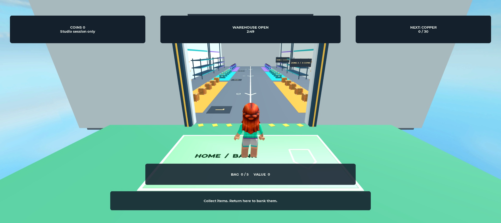
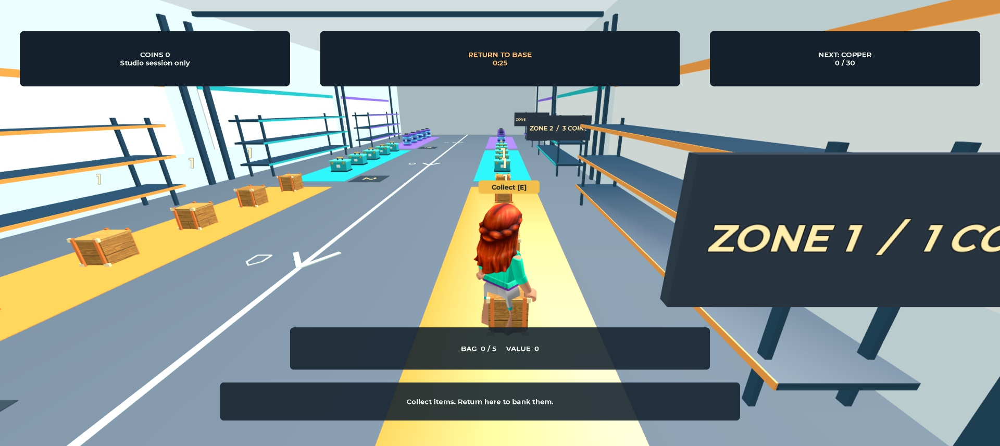
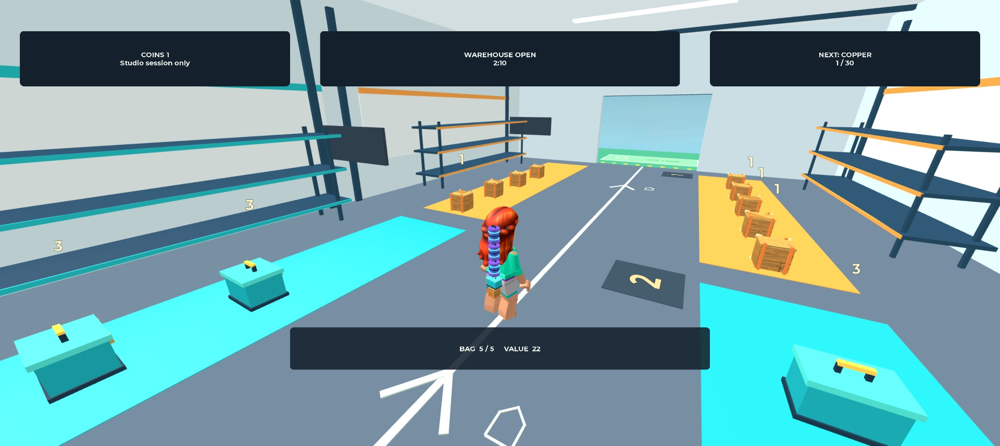
בצילום החזרה המצלמה הוצבה לצורך בדיקה באמצעות MCP. הוא מוכיח את מראה המטען והדרך בזווית הזאת; אינו מוכיח נוחות סיבוב מצלמה.
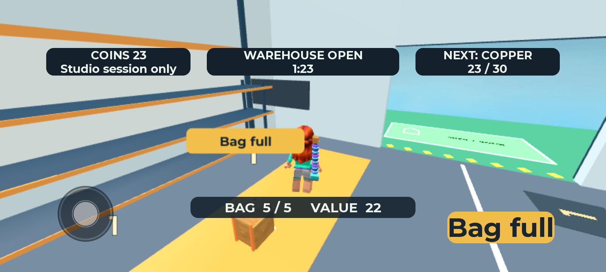
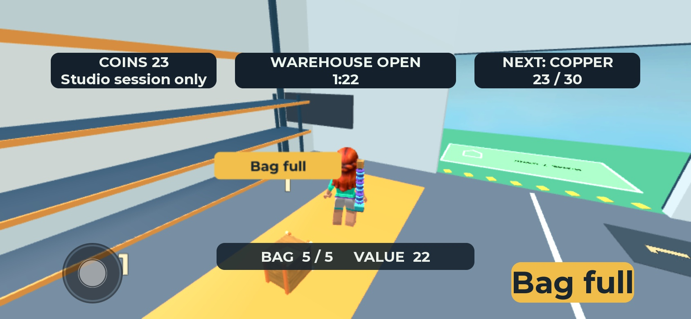
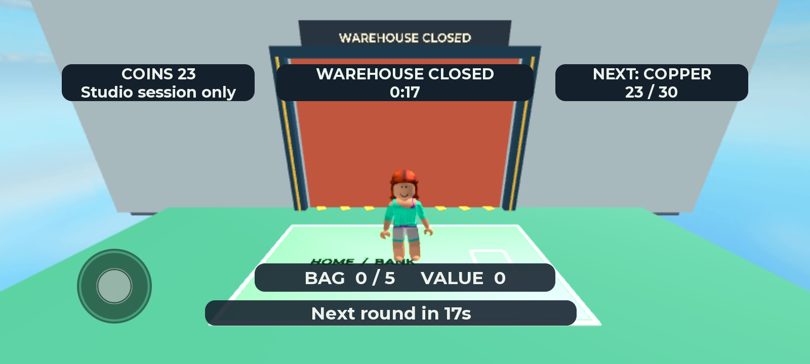
השוואת הביניים לפני התיקונים
| תחום ורפרנס | מה נראה עכשיו | מה עדיין לא הוכח |
|---|---|---|
| חלוקת צבעים ומשטחי פעולה — Escape Tsunami | שלושה פסי אזור מובחנים, מסגרת כניסה ובסיס ירוק בעל מסגרת. המסלול המרכזי נשאר רגוע ומופרד | אין בדיקה אנושית של זיהוי הדרך. המראה אינו העתק של בסיסי השדרוג ברפרנס |
| חפץ שנישא ליד הדמות ויעד חזרה — Steal a Brainrot | ארגז, מזוודה ומכל מופיעים גם במטען, והבסיס נראה דרך הכניסה | המטען אצלנו קטן ודק ביחס לחפץ הבולט ברפרנס. בנייד פרטי המשפחות פחות ברורים; אין אישור שההבחנה מספקת במבט מהיר |
| צורה, צבע וערך — Survive LAVA | שלוש צלליות ומספר צבעים בכל חפץ, במקום קוביות זהות. המזוודה רחבה והמכל גבוה וגלילי | לרפרנס דמויות גדולות ובעלות אופי בולט. החפצים שלנו תעשייתיים ופשוטים יותר. לא הוכח שכוח המשיכה שלהם שווה לרפרנס |
| קריאות המידע בנייד | המטבעות, זמן המחסן, הקיבולת והערך נראים בשני צילומי הנייד. כפתור Bag full מופרד מהמידע הראשי | תווית החפץ בעולם יכולה להתקרב לדמות בזווית הבדיקה. אין כאן כיסוי לכל זווית, touch מלא או מכשיר אמיתי |
תוצאת בדיקת הביניים לפני התיקונים: המחסור המקורי בשינוי צורה, גודל וצבע טופל ונראה בפועל. ההשוואה הכוללת נשארת פתוחה, במיוחד בולטות המטען בנייד והאופי החזותי מול חפצי המתחרים. אין בסיס לקביעה שבסבירות גבוהה שחקן יבחר במשחק שלנו. לא מסמנים קבלה מלאה ולא עוברים לבדיקות אנושיות על סמך הצילומים בלבד.
הבדיקה הקודמת — 23/10/2026
אדם דחה את המראה הקודם בגלל מחסור בצבעים ובצורות וחפצים פשוטים מדי. צילום המטען הישן נשמר לצורך השוואה. הוא אינו מייצג את המימוש החדש. תוצאות הקוד הקודמות אינן מחליפות קבלה חזותית.

התחלה ללא תפריטים, מסלול קצר ובחירה בין האטה לחזרה הם סיבות סבירות לבדוק את המשחק. tests אינם מוכיחים שהחוויה מעניינת שחקן או עדיפה על המתחרים. אין עדיין תצפית אנושית שמוכיחה העדפה. דוח הבדיקה מפרט את הבדיקות שבוצעו ואת המגבלות.